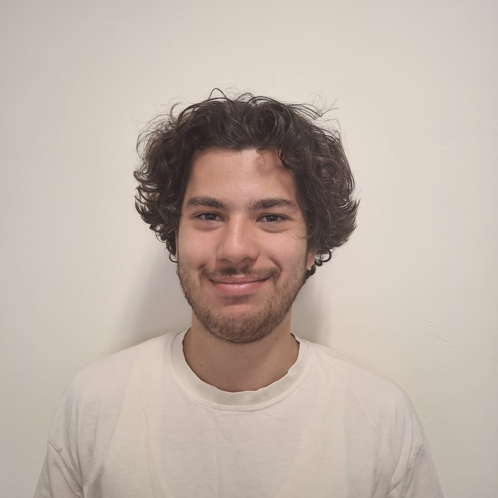

Yapay Zeka | Mikrokontrolcüler
Merhaba! Ben Taha Furkan Tosun olarak Ankara Üniversitesi'nde Yazılım Mühendisliği Bölümünde öğrenciyim. Mikroişlemciler ve Yapay Zeka alanlarında ilgi duyuyorum.Bu alanlarda kendimi geliştirmek için çaba sarf etmekteyim.
Ankara Üniversitesi
Programlama Dilleri
Araçlar ve Teknolojiler
Diller
Taha Furkan Tosun
Ankara Üniversitesi, Mühendislik Fakültesi
Yazılım Mühendisliği Bölümü
Ankara, Türkiye
GitHub: github.com/TAHAFURKANTOSUN
Email: tahafurkantosun@gmail.com